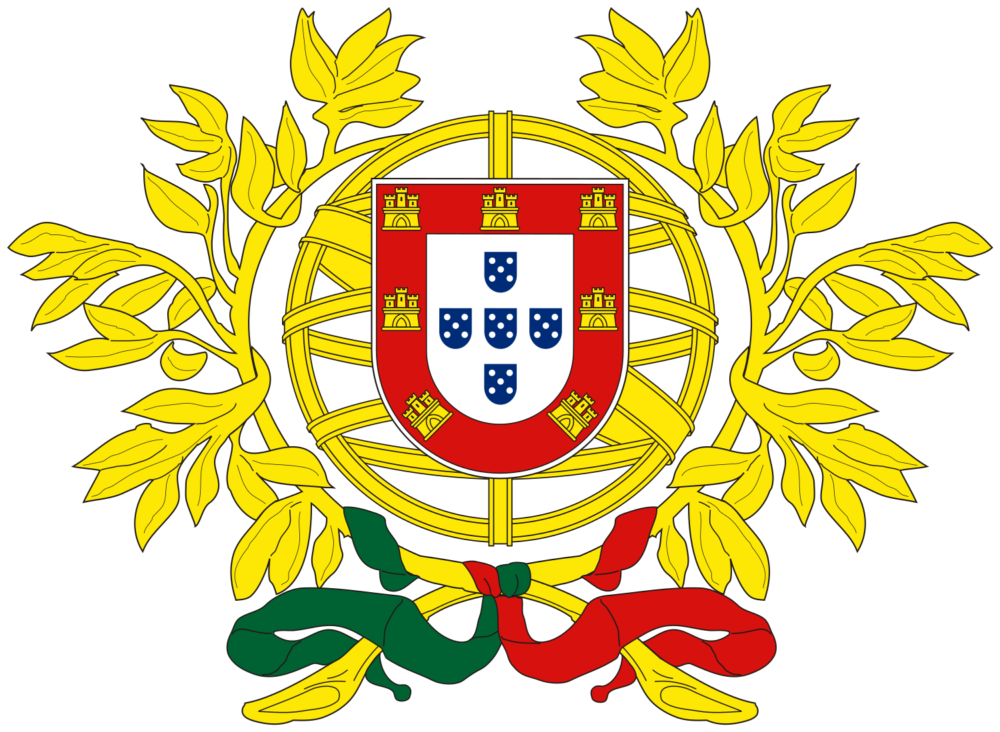
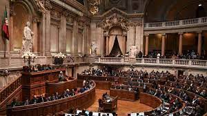

Sistema político e governo Portugal é uma república democrática com um sistema político parlamentar. Seu sistema político e governo são caracterizados pelos seguintes elementos:
Chefe de Estado:
- O Presidente da República é o chefe de Estado de Portugal. Ele é eleito a cada cinco anos por sufrágio direto e universal. O presidente exerce funções principalmente cerimoniais, representando o país no exterior e garantindo o funcionamento adequado das instituições democráticas.

Chefe de Governo:
- O Primeiro-Ministro é o chefe de governo e detém o poder executivo real. Ele é geralmente o líder do partido político com maioria no Parlamento. O Primeiro-Ministro nomeia os membros do governo e é responsável pela implementação de políticas e administração do país.

Parlamento:
- O Parlamento de Portugal é unicameral e é conhecido como a Assembleia da República (Assembleia da República). É composto por 230 deputados eleitos por sufrágio direto para mandatos de quatro anos. O Parlamento é responsável por aprovar leis, fiscalizar o governo e representar os interesses dos cidadãos.

Partidos Políticos:
- Portugal tem vários partidos políticos ativos, mas dois partidos principais historicamente têm competido pelo poder: o Partido Socialista (PS) e o Partido Social Democrata (PSD). Além disso, existem outros partidos políticos, incluindo partidos de esquerda, de direita e de centro, que têm influência no cenário político português.
Sistema Eleitoral:
- As eleições legislativas em Portugal são realizadas através de um sistema de representação proporcional, que significa que o número de deputados de um partido no Parlamento é proporcional ao número de votos recebidos nas eleições.
Justiça:
- O sistema judicial em Portugal é independente do poder executivo e legislativo. O Tribunal Constitucional é responsável por garantir a conformidade das leis com a Constituição e proteger os direitos fundamentais dos cidadãos.
Divisão Administrativa:
- Portugal está dividido em 18 distritos, cada um com seu próprio governo local e uma série de municípios (concelhos). As regiões autônomas dos Açores e da Madeira têm um alto grau de autonomia em relação ao governo central.

Política Externa:
- Portugal é membro da União Europeia (UE) desde 1986 e adotou o Euro como sua moeda. O país desempenha um papel ativo na política europeia e na cooperação internacional. Além disso, Portugal mantém laços históricos e culturais estreitos com várias nações de língua portuguesa, especialmente através da Comunidade dos Países de Língua Portuguesa (CPLP).